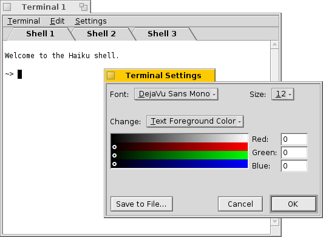

Terminal
Terminal
| Deskbar: | Applications | |
| Location: | /boot/beos/apps/Terminal | |
| Settings: | ~/config/settings/Terminal_settings ~/.profile - adds/overrides defaults in /boot/beos/etc/profile ~/.inputrc - adds/overrides defaults in /boot/beos/etc/inputrc |
The Terminal is Haiku's interface to bash, the Bourne Again Shell.
If you want to learn more about using the shell, have a look at this Introduction to bash. After becoming familiar with the command line, you should study the possibilies of scripting, the Advanced Bash-Scripting Guide is one of many resources on the net.
Here, however, we'll concentrate on the Terminal application itself.
Appearance
You can open as many Terminals as needed, either each in it's own window by simply launching more Terminals or with ALT+N from an already running Terminal. Or you use Terminal's tabbed view and open another tab with ALT+T.
A Terminal window can be resized like any other window or you use the presets from the Ssettings | Window Size menu. ALT+RETURN toggles fullscreen mode.
Changed window size and text encoding are only kept choosing Settings | Save as default.
Settings | Preferences opens a panel where you can set font type, font size and the different text and background colors. You can save different settings as separate profiles, which on double-click open an accordingly configured Terminal.
Pressing OK will save the current settings as default.
Bash customization
Coming from Unix, there are countless possibilities to customize the bash itself. There are two files that are especially important to the user: .profile and .inputrc
Both files can be created in the home/ folder and add or override the system defaults that are defined in /boot/beos/etc/.
.profile
The .profile is loaded every time you open a new Terminal. It sets all kinds of aliases and variables that will affect bash's behavior and appearance. You'll find many online resources that will detail all possibilities.
The Haiku/BeOS Tip Server has quite a few tips to get you started, for example:
There are more, have a look.
.inputrc
The .inputrc deals with keybindings. Since Haiku provides useful defaults, you probably don't have to mess with these more involved settings. If you do have special needs here, consult one of the many online resources, e.g. The GNU Readline Library.
Keyboard shortcuts
You'll find a list of useful shortcuts in Shortcuts and key combinations.